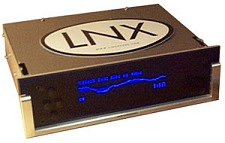
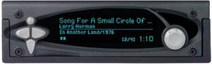
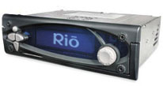

· What is the difference between the empeg Car and the Rio Car?
(Entry last updated on January 15th, 2009)The Rio Car is essentially the same product as the empeg Car Mark 2. It is different from the empeg Car Mark 1. However, all three products remain fully supported.
A bit of history:
In June 1998, Hugo Fiennes founded empeg, Ltd., based in Cambridge, England. The plan was to make the first truly commercial-quality, high-capacity car MP3 player that didn't rely upon do-it-yourself kits.
 The empeg Car Mark 1 was released in the late summer of 1999, and fewer than 400 units total were shipped to customers. The Mark 1 had space for two 2.5" laptop hard disks, and it had 8 megabytes of RAM for running software and caching songs. USB and Serial were the connections available to interface with your PC. It had a plain faceplate with four simple buttons. It had a built-in FM-only tuner. Despite being a "first product", its design was very advanced. The hard disks were shock mounted, its display was highly graphical, and it allowed unprecedented levels of control over your music collection. It was the first mass-market product which truly allowed you to take your entire music collection with you anywhere.
|
 The empeg Car Mark 2 was released in the summer of 2000. It had an updated fascia design which was more stylish, and incorporated a rotary encoder knob in addition to the buttons. The sled and car docking connector were completely redesigned to be more reliable (Mark 1 and Mark 2 sleds are not compatible). It had more RAM (12mb) and added 10baseT ethernet as one of the connection options. It added a microphone connector for the possibility of adding voice recognition software in the future. An internal radio tuner was no longer included, but there was a connector plug that allowed a higher quality add-on AM/FM/RDS tuner to be attached. A real-time clock circuit was added so that the time of day could be displayed on the screen. The output stage was improved to make the unit less suceptible to DC ground loop problems and alternator whine. Its power wiring was changed, to allow it to enter standby mode when you turn off the car's ignition. A headlight-sense display dimmer circuit and a cellphone mute input were added. Finally, the internal circuit design was cleaned up and simplified to allow for easier mass production.
|
 In November of 2000, Sonic|blue saw the promise in empeg's products and talent, and purchased the company. The empeg team was incorporated into the Rio division, and the empeg Car Mark 2 player was renamed the Rio Car. Some very minor hardware details have been improved on the Rio Car, but it remains essentially the same product as the empeg Car Mark 2. Its rotary encoder was changed from a round-shaft type to a keyed-shaft type. It has a tad more RAM (16mb), but it runs exactly the same firmware, and the difference in RAM simply means that it caches a bit more song data to RAM so it hits the hard disk slightly less often. Internally, this product is known as the Mark 2a to differentiate it from the prior hardware revision.
|
All hardware attachments for the empeg Car Mark 2 and the Rio Car are identical. The sleds are compatible, the tuner attachment plug is compatible, the faceplates are compatible, etc. The only major part that's not interchangeable between the 2 and the 2a is the plastic rotary encoder knob, as the shaft of the encoder is shaped differently on the two models.
The player's firmware is exactly the same for the empeg Car Mark 2 and the Rio Car. You install the same upgrades, regardless of which of the two units you own.
However, the Mark 1 unit, for the most part, is not parts-compatible. It requires a completely different sled, it has a different faceplate and handle, etc. The internal firmware is also not compatible. The Mark 1 requires its own separate player firmware.
Finally, note that the "Emplode" Windows software which loads the music into the player is compatible across all models. In fact, Emplode is designed to work with certain other future Rio products besides the car player. So there is only one download of the Emplode software. The separate downloads for Mark 1 and Mark 2 are only needed with respect to upgrading the firmware on the player itself.
|